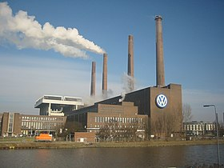
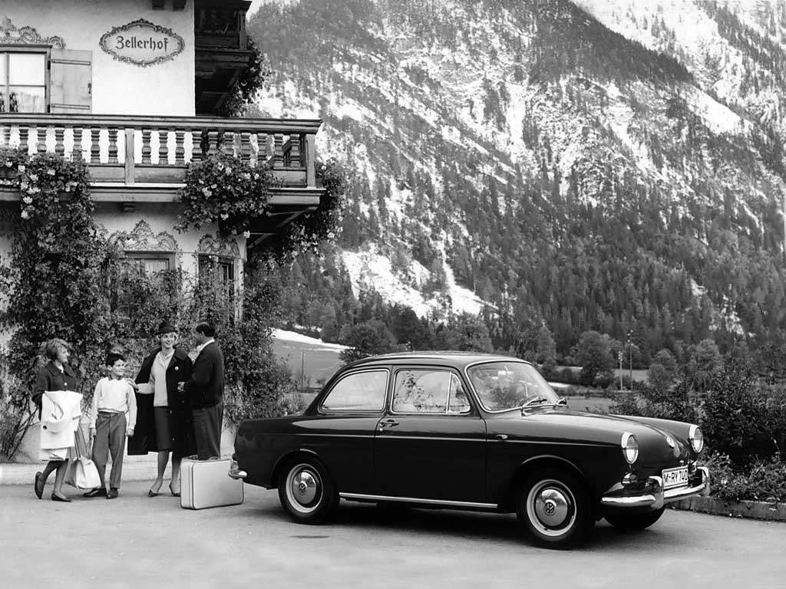

АВТОМОБІЛІ VOLKSWAGEN В УКРАЇНІ
Шановні друзі!
Вітаємо вас на нашій сторінці, яка присвячена автомобілям Volkswagen
КОРОТКА ІСТОРІЯ VOLKSWAGEN
Початок 1933 рік
Історія Volkswagen почалася восени 1933 року  17 січня 1934 року колишній шеф-конструктор австрійської фірми Daimler-Motoren-Gesellschaft Фердинанд Порше залишив в Імперському міністерстві транспорту свою доповідну записку «Меморандум щодо побудови німецького народного автомобіля» (нім. «Exposé betreffend den Bau eines Deutschen Volkswagens»). І вже 22 червня того ж року Імперська спілка автомобільної промисловості видала йому замовлення на конструювання легкового автомобіля «для народу». Перший прототип автомобіля під умовною назвою V 1 (від нім. Versuchswagen— випробувальний автомобіль) був зібраний в приватному гаражі Фердинанда Порше під Штутгартом у 1935 році. Було збудовано ще два екземпляри, які отримали загальну назву V 3. Не обійшлось без плагіату. Фердінанд Порше ретельно збирав інформацію про вже існуючі або новітні моделі інших автоконструкторів і тому його прототип дуже нагадував дизайнерську розробку 1925 року австрійського автоконструктора Бела Барені, а також основні риси моделі 1933 року Tatra 97, яка вже мала назву «Жук» (нім. Maikäfer). Невдовзі Порше зібрав невеличку серію з 30 екземплярів, які отримали індекс V 30. В лютому 1937 один із зразків протестував особисто Гітлер і лишився дуже задоволеним. Тоді ж моделі була дана офіційна назва «KdF-Wagen» (нім. «Kraft durch Freude Wagen» — «Автомобіль Сила через радість»). Після дворічних випробувань, за час яких прототипи пробігли понад 2,4 млн кілометрів, 1937 року модель V 30 було запущено у серійне виробництво. До 1938 автомобіль здобув знайомий кільком поколінням зовнішній вигляд. Volkswagen відразу оцінили конструктори, інженери та водії. Про нього заговорили, з'явилися численні публікації, 1938 року в статті в «New York Times» Volkswagen вперше за зовнішню схожість назвали «жуком» (англ. «Beetle», нім. «Käfer»). Пізніше це прізвисько настільки прижилося, що стало власною назвою моделі. Для виробництва «народного автомобіля» 26 травня 1938 в місті Вольфсбурзі розпочалося будівництво найбільшого європейського автозаводу Volkswagen. Але війна, що насувалася, перешкодила налагодити випуск цього автомобіля. Їх було виготовлено всього дюжину.
Після Другої світової війни (1940-ві та 1950-ті рр.)
 Після закінчення війни підприємство потрапило під контроль англійців, у зоні окупації яких перебував Вольфсбург. Восени 1945 англійська влада передала заводу замовлення на 20 тисяч автомобілів. Але серійне виробництво автомобіля в його первинній модифікації почалося майже через десять років.1947 року Volkswagen було виставлено на експортному ярмарку в Ганновері він привернув до себе значну увагу. Завод одержав перше закордонне замовлення з Нідерландів на тисячу автомобілів, а 1948 почали надходити замовлення зі Швейцарії, Бельгії, Швеції та інших країн.
Сучасність 2020 - 2022 рр.
На сьогодні Volkswagen – один із лідерів світової індустрії автовиробництва з обсягом випуску нових автомобілів понад 10 млн. штук на рік.
16 березня 2021 року компанія представила глобальну програму розвитку на найближче десятиліття. Вона включає масштабні інвестиції у виробництво батарей
та постійне нарощування частки електромобілів серед продажів концерну.
Головна мета Volkswagen – лідерство на ринку електромобілів вже до 2025 року.
Раніше, у 2019 році, Volkswagen та компанія Ford заснували альянс для спільної розробки комерційної техніки, включаючи електрокари та автопілоти.
У рамках альянсу компанії інвестували 2,6 млрд доларів у стартап Argo AI, який займається розробкою систем автопілотування.
НАЙБІЛЬШЕ ПОПУЛЯРНІ МОДЕЛІ
Нижче наведені найбільш популярні моделі від VOLKSWAGEN
- Volkswagen POLO
- Volkswagen GOLF
- Volkswagen PASSAT
- Volkswagen TIGUAN
- Volkswagen TOUAREG

Чому VOLKSWAGEN має таку популярність в світі ?
- Висока якість та комфорт автомобілей
- Високе співвідношення ціна - якість
- Широка мережа представництв в кожному регіоні
Загальний оглад популярних двигунів
Таблиця характеристик| Тип двигуна | Загальні дані | Витрата палива ** | ||
|---|---|---|---|---|
| Потужність, к.с. | Крутний момент, Нм | Оберти *, об/хв. | ||
| TDI 2.0 дизельний | 140 | 320 | 2500 | 5,2 л/100 км |
| TSI 1.8 бензиновий | 160 | 250 | 4500 | 7,1 л/100 км |
| Примітки: * - оберти вказані для макс крутного моменту, ** - середня витрата | ||||